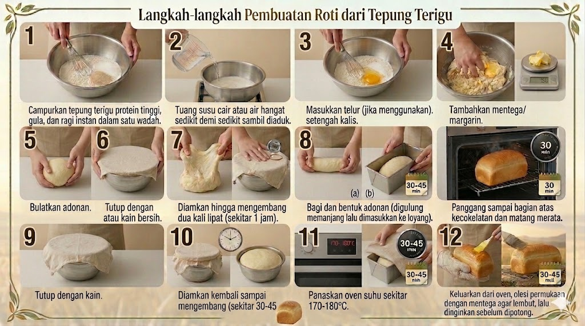
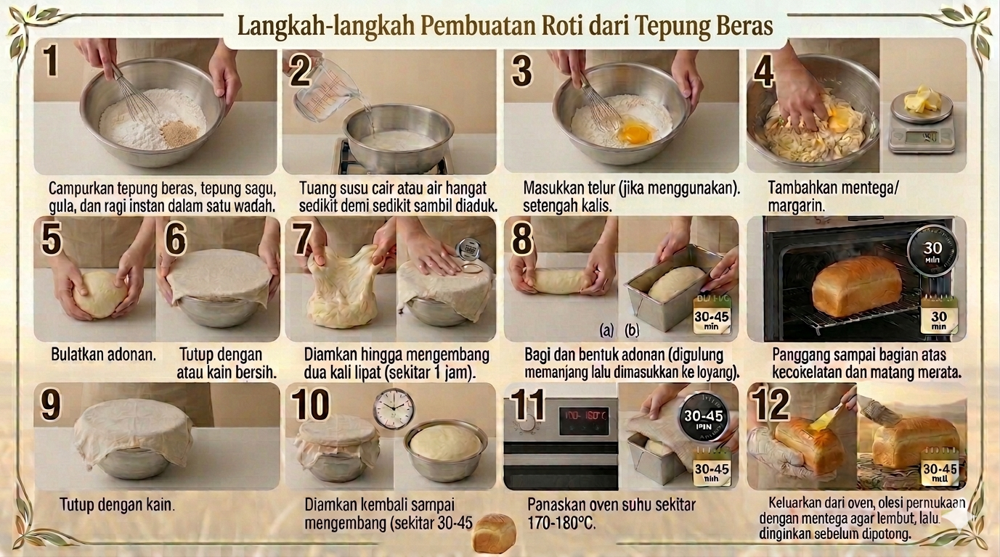

Website ini berisi informasi mengenai proses fermentasi pada pembuatan roti serta penelitian sederhana yang dilakukan untuk mengamati proses tersebut. Melalui halaman yang tersedia, pengunjung dapat mengetahui gambaran umum mengenai topik yang dibahas serta profil pembuat website. Informasi yang disajikan bertujuan untuk memberikan pemahaman tentang fermentasi sebagai salah satu contoh penerapan bioteknologi dalam kehidupan sehari-hari, khususnya dalam pembuatan roti, sehingga pembaca dapat mengenal prosesnya secara lebih jelas dan mudah dipahami.
Selain itu, bagi pengunjung yang ingin melihat hasil penelitian secara lebih lengkap dan detail, penulis juga menyediakan file makalah yang dapat diunduh melalui tombol yang tersedia. File tersebut memuat seluruh proses penelitian, mulai dari latar belakang, metode, hingga hasil dan pembahasan yang telah dilakukan.
Pembuatan roti tawar merupakan salah satu contoh penerapan bioteknologi konvensional dalam kehidupan sehari-hari. Proses ini memanfaatkan bantuan mikroorganisme berupa ragi, khususnya Saccharomyces cerevisiae, yang berperan dalam proses fermentasi. Pada proses tersebut, ragi akan mengubah gula yang terdapat dalam adonan menjadi gas karbon dioksida dan sedikit alkohol. Gas karbon dioksida inilah yang menyebabkan adonan roti mengembang sehingga menghasilkan tekstur roti yang lembut dan berpori.
Proses pembuatan roti tawar dilakukan melalui beberapa tahapan penting, dimulai dari persiapan bahan dan alat, pencampuran bahan, pengulenan adonan, proses fermentasi, pembentukan adonan, hingga proses pemanggangan. Setiap tahapan memiliki peran penting dalam menentukan kualitas roti yang dihasilkan, baik dari segi tekstur, rasa, maupun aroma. Proses fermentasi yang berlangsung dengan baik akan menghasilkan adonan yang mengembang dengan sempurna sehingga roti yang dihasilkan memiliki tekstur yang lembut dan cita rasa yang khas.
Melalui proses ini dapat dipahami bahwa mikroorganisme memiliki peran yang sangat penting dalam membantu proses produksi makanan. Pemanfaatan ragi dalam pembuatan roti menunjukkan bagaimana bioteknologi konvensional dapat diterapkan secara sederhana namun memberikan manfaat yang besar bagi kehidupan manusia. Dengan memahami proses tersebut, diharapkan dapat menambah pengetahuan mengenai pemanfaatan bioteknologi dalam bidang pangan serta meningkatkan pemahaman mengenai peran mikroorganisme dalam kehidupan sehari-hari.

